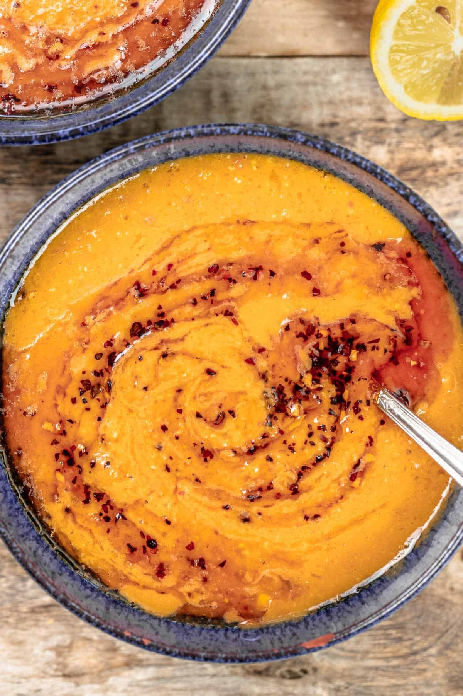

Turkish Lentil Soup

Turkish red lentil soup, or mercimek çorbası, is creamy and full of nutrients!
Red lentils breakdown and soften easily during the the cooking process,
which is how you get the creamy texture in this Turkish soup without the added fat.
When I need to throw together a quick and healthy dinner, red lentils are one of my go-tos.
Fast-cooking and delicious, these tiny legumes are a good source of both protein and fiber.
They absorb seasonings easily, so there’s no limit to the different flavors I can play with.
Ingredients
- Extra Vergin Olive oil
- Aromatics: Chopped yellow onion and garlic
- Vegetables: Carrots, tomato paste, and a russet potato. I like including a potato because it acts as a natural thickener,
adding to the velvety texture of the lentil soup once you blend it. If you prefer soup that’s not as thick, you can leave it out.
- Broth: Low-sodium chicken or vegetable broth both work well. To make this recipe vegan, use vegetable broth.
- Spices: Aleppo pepper, cumin, and coriander for heat and earthiness.
- Red lentils: Pick through and rinse the lentils before adding them to the broth.
- Lemon: I love squeezing some lemon juice over my soup to instantly brighten it, especially when the soup has deep flavors like this one.
Steps
- Saute the vegetables and aromatics. Heat 2 tablespoons extra virgin olive oil in a large cooking pot over medium heat.
Add 1 chopped onion, 2 minced garlic cloves, 2 to 3 chopped carrots, and 1 chopped russet potato.
Season with a generous dash of kosher salt and cook until the veggies have softened, which will take 5 to 7 minutes.
Then add the tomato paste and stir to coat everything.
- Add the broth, spices, and lentils. Pour in 6 cups of low-sodium chicken or vegetable broth, then add 1 teaspoon Aleppo pepper,
1 teaspoon cumin, and ½ teaspoon coriander. Add 1 cup red lentils and stir.
- Cook the soup. Let the soup boil for 4 to 5 minutes, then lower the heat to a very gentle simmer and let it cook for 15 to 20 minutes.
Put the lid on the pot but leave a small opening. Stir occasionally, and if the soup is getting too thick, add more broth.
- Blend the lentil soup. Once the lentils are tender, remove the pot from the heat and carefully blend with an immersion blender until smooth.
- Warm some extra virgin olive oil. Add 3 tablespoons EVOO to a small skillet over medium heat.
Add 1 teaspoon Aleppo pepper and 1 clove minced garlic and cook briefly, until the garlic is golden and the oil looks a bit red from the Aleppo pepper.
Pour the oil over the top of the soup to immediately add richness.
- Serve. Ladle the soup into bowls and serve with lemon wedges on the side. I love squeezing a good amount of lemon juice over my soup before I dig in.